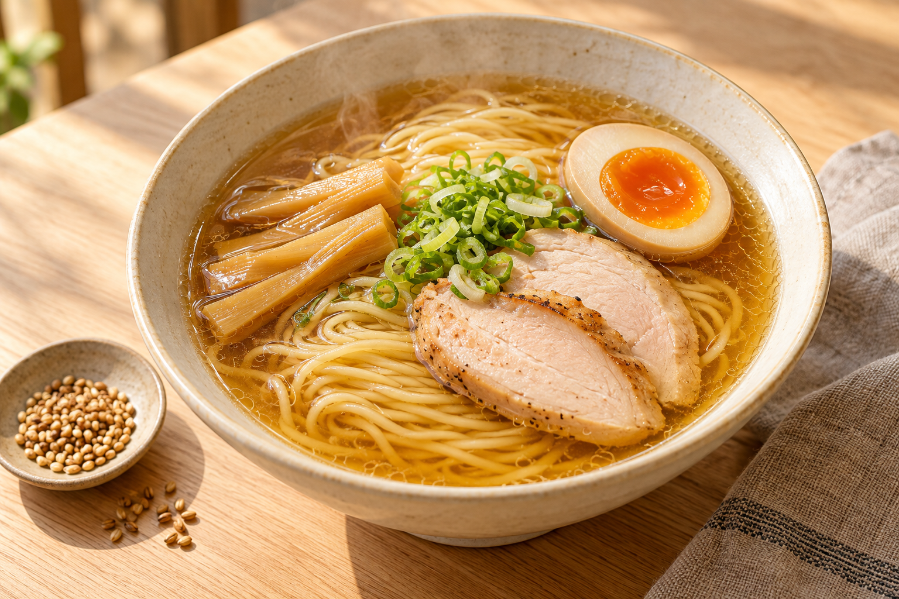
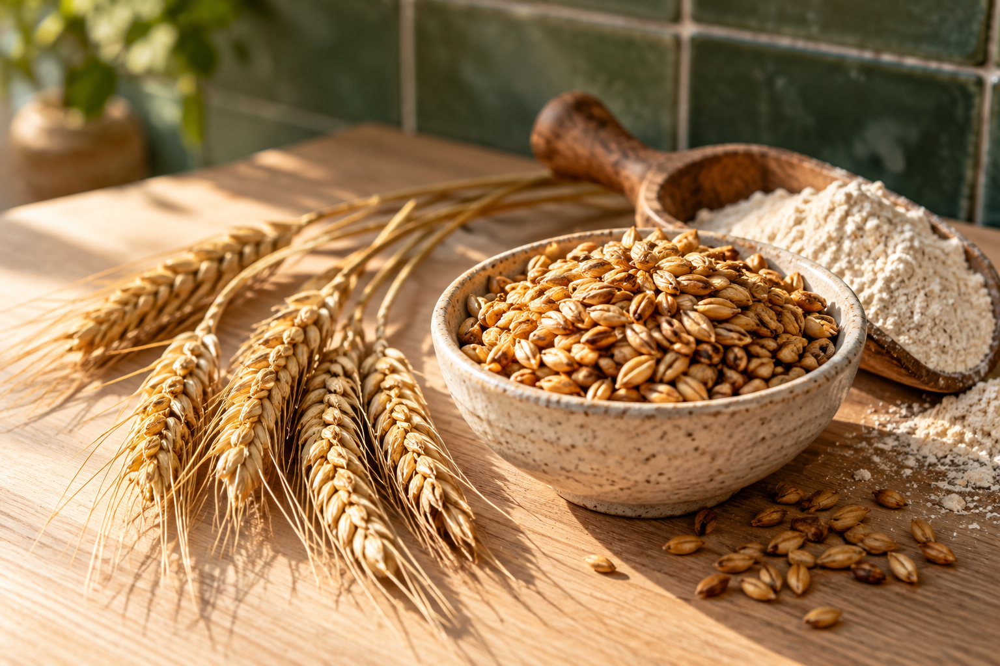
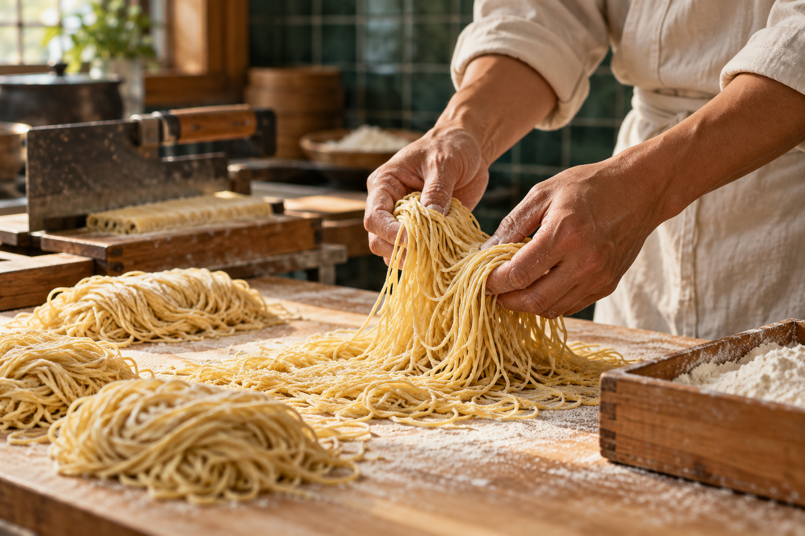
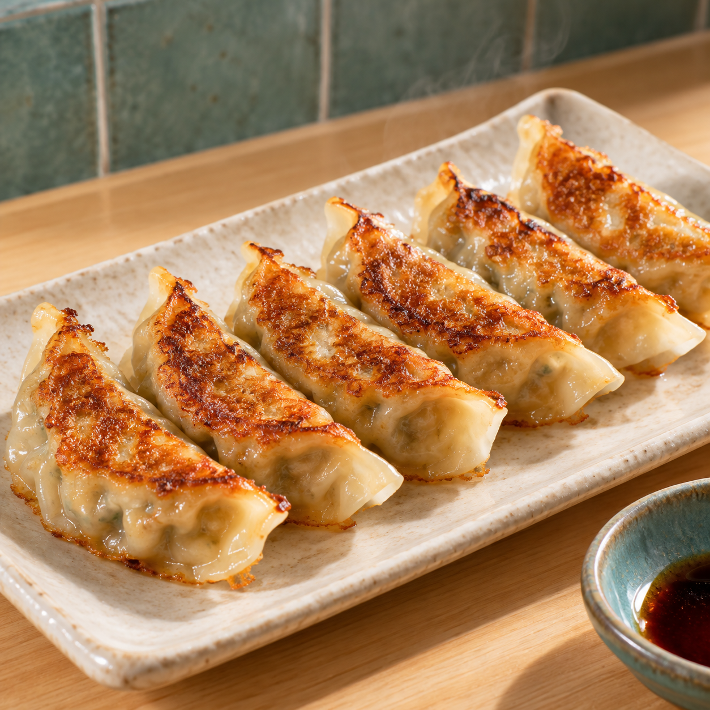
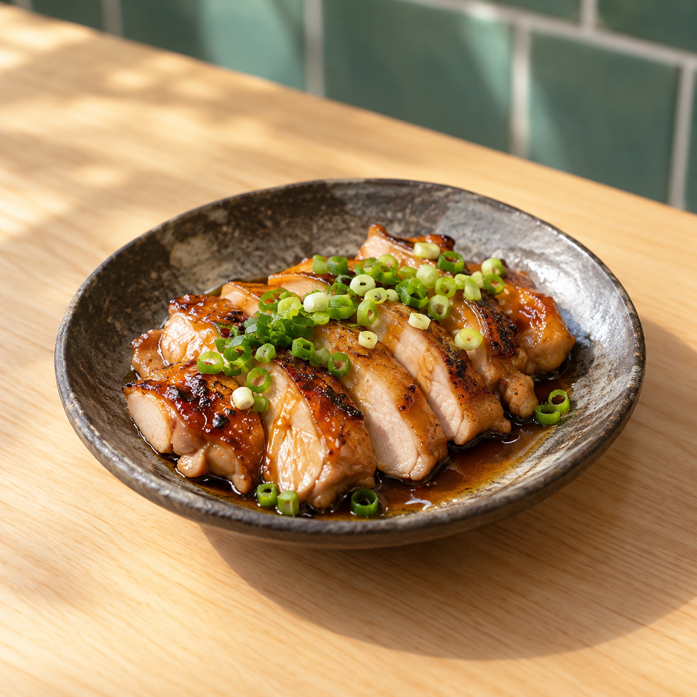
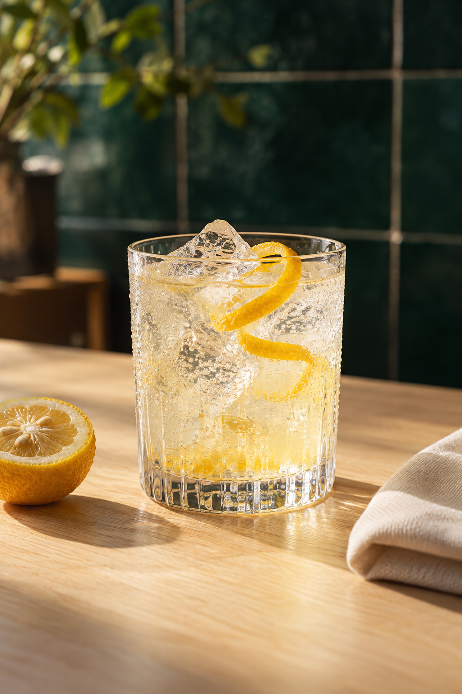
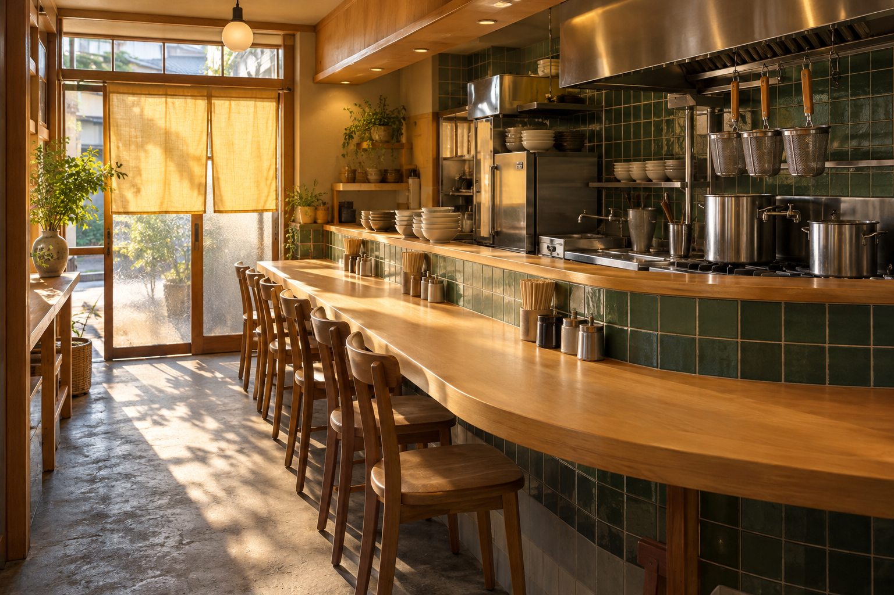
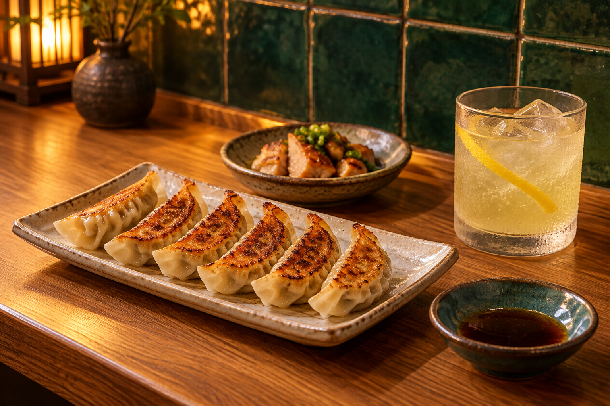

麦皮の焼き餃子
House-made gyoza
カリッと焼いた自家製の薄皮に、たっぷりの野菜と豚肉。まずは何もつけずに、ぱくっと。麺の前のひと皿にも、ゆっくり過ごす夜のおともにも。
Thin house-made wrappers. A crisp golden bottom. A juicy filling. Start with a little plate of gyoza, and let the evening take its time.
6個 ¥480焦がし麦と、鶏だしと。今日も、いい麺日和。

鶏だしの余韻。Toasty wheat.

Golden broth.いつもの道に、いつもの一杯。
でも、ひと口目はちょっと特別。
こむぎ日和は、焦がした麦の香ばしさと、じっくり炊いた鶏だしを合わせた、小さなラーメン屋です。毎朝打つ細麺は、つるっと、ぷつっと。ひと息つきたいお昼にも、仕事帰りの寄り道にも、肩の力を抜いて食べてほしい。
むずかしいことは、どんぶりの中で。
食べるときは、ただ「おいしい」でいい。
A little toastiness, a little comfort. We make our noodles each morning and let a gentle chicken broth do the talking. Pull up a seat. Your good day starts here.

A bowl for today
ひと口目に、ふわっと麦。
そのあと、鶏のうまみがじんわり。
透きとおった鶏だしに、焦がし麦の香りを重ねた醤油スープ。小麦の甘さを感じる自家製細麺と、香ばしく焼いた鶏、半熟たまご。最後のひと口まで、するすると食べられる一杯です。
Our signature bowl pairs a clear chicken broth with the warm aroma of toasted wheat. Thin house-made noodles, roasted chicken, and a golden soft egg. Simple things, carefully made.
Toasted wheat & chicken shoyu ramen
細麺、ぷつっと。
スープ、じんわり。

EveningHouse-made gyoza
カリッと焼いた自家製の薄皮に、たっぷりの野菜と豚肉。まずは何もつけずに、ぱくっと。麺の前のひと皿にも、ゆっくり過ごす夜のおともにも。
Thin house-made wrappers. A crisp golden bottom. A juicy filling. Start with a little plate of gyoza, and let the evening take its time.
6個 ¥480ゆっくり火を入れた鶏を、注文ごとに香ばしく。ねぎと、ひとさじの自家製だれで。
Slow-cooked chicken, finished over heat. Scallions and a spoonful of our shoyu glaze.
¥420
Roasted chicken

House-made yuzu soda
香りはきりっと、後味はすっきり。自家製柚子シロップのソーダ。お酒を飲まない日にも、ひんやりしたひと息を。
Bright yuzu, sparkling water, and plenty of ice. A little sunshine in a glass.
¥380Meet the bowl mates
Tap to meet me ↻
A little place for a good bowl
Some days just need a bowl of ramen.

晴れた日も、ちょっとくたびれた日も。ここで過ごす少しの時間が、いいひと息になったら。そんな気持ちで、スープを炊いて、麺を打ちます。
特別な日のごちそうよりも、ふつうの日の楽しみでありたい。こむぎ日和は、毎日のすぐそばにあるラーメン屋です。
We believe in small comforts: a warm counter, a friendly hello, and a bowl made with care. Nothing fancy. Just something to look forward to.
Made every morning
小麦粉と水と、ひとつまみの塩。今日の湿度に合わせて水を加え、よく休ませてから、細く切り出します。ぷつっとした歯切れと、小麦の甘い香り。その日の麺は、その日のうちに。
Flour, water, and a little salt. Each morning is a fresh start. We rest, roll, and cut our noodles in small batches for a clean bite and a gentle wheat aroma.
Little moments from our kitchen
